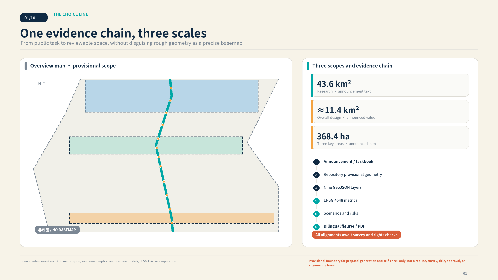
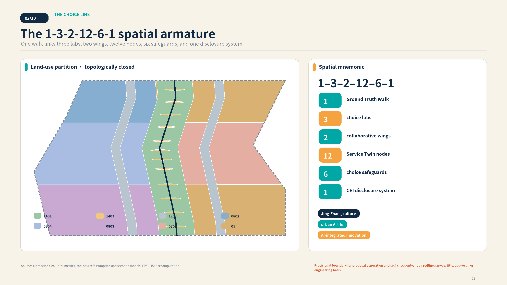
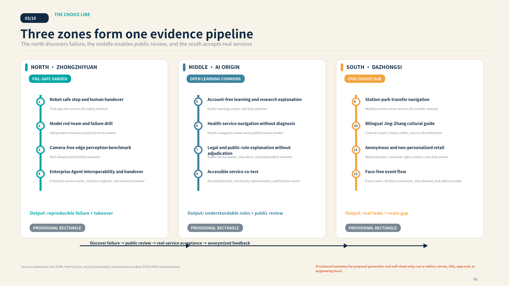
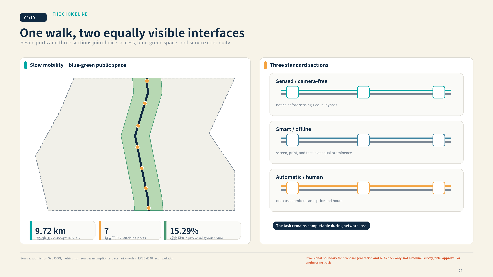
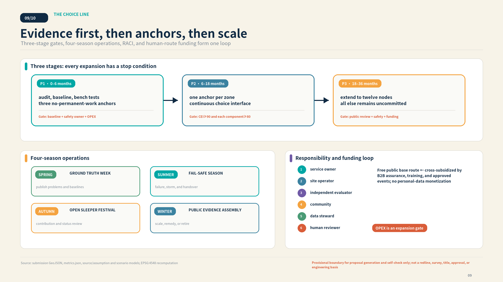
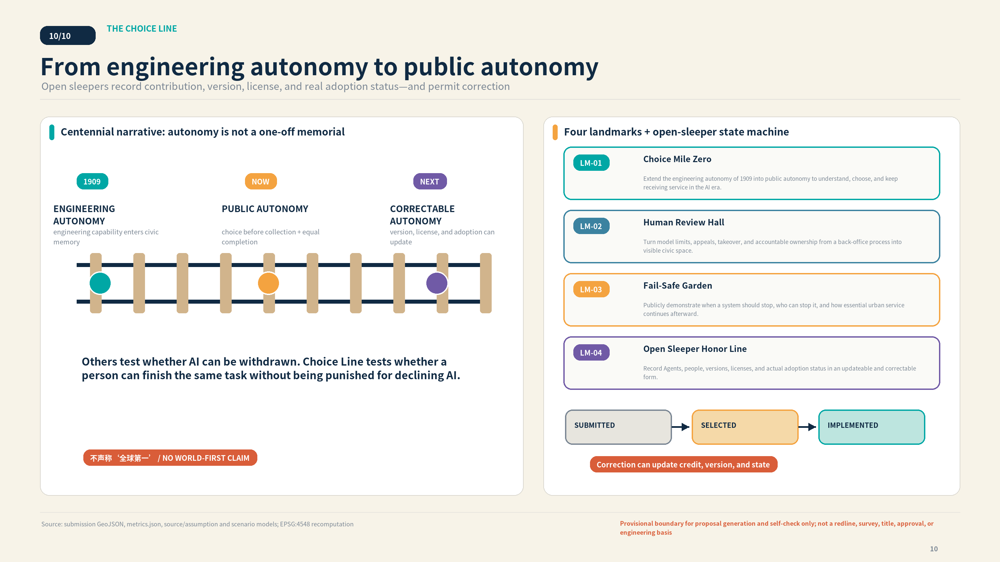
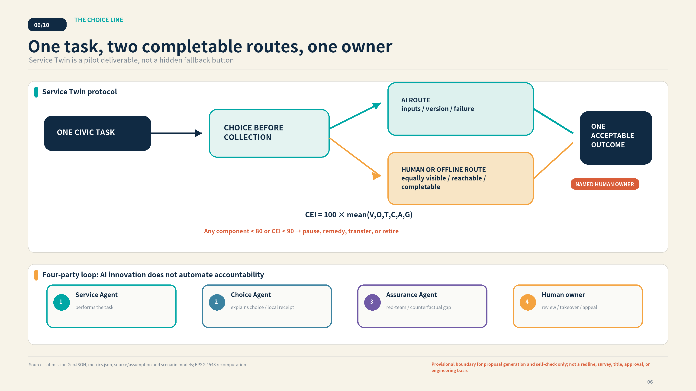
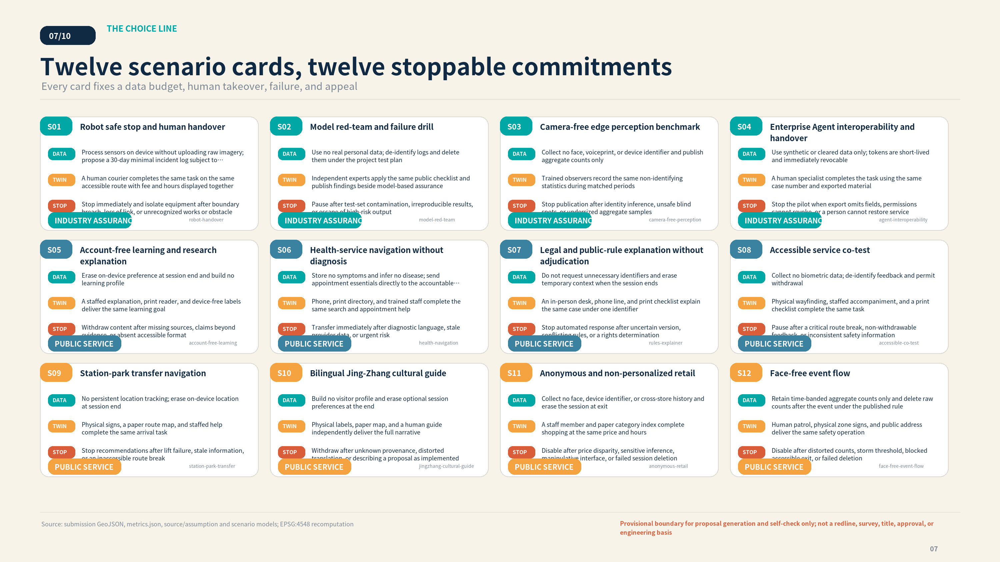
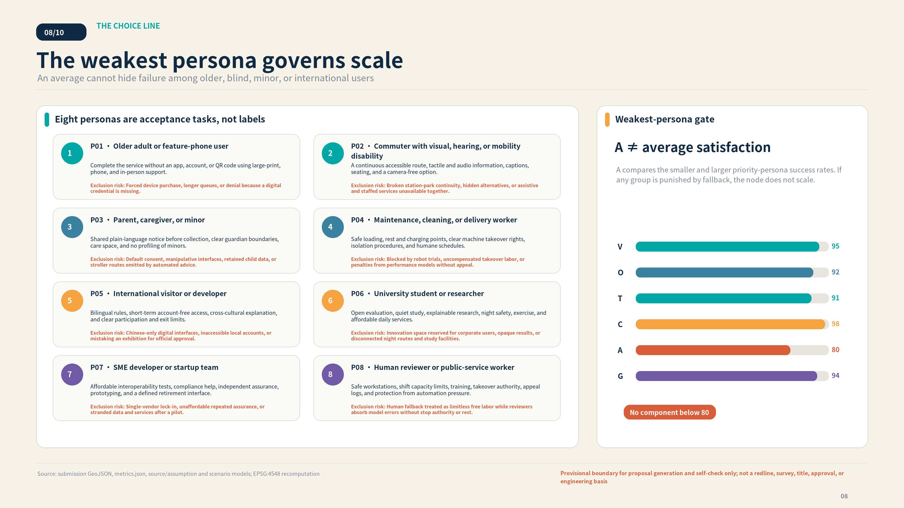
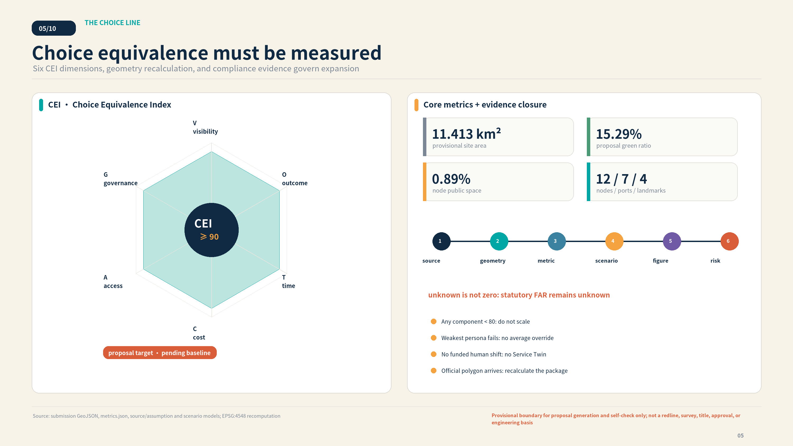

Robot safe stop and human handover
Complete low-speed delivery on a controlled park path and transfer safely to a person when risk triggers.
A human courier completes the same task on the same accessible route with fee and hours displayed togetherOne Ground Truth Walk · three choice labs · twelve Service Twin nodes · one publicly correctable civic protocol
PROVISIONAL BOUNDARY · NOT AN APPROVED PLAN · TARGETS AWAIT BASELINEThe overview uses repository provisional rough geometry and emphasizes design intent, evidence, and three scales—without a commercial basemap, imagery, or non-public spatial data.


The zones form a failure-discovery, public-review, and real-service acceptance pipeline. Land polygons close without overlap; slow mobility uses twin interfaces on one walk, not two engineering tracks.


Green spine, node plazas, conceptual buildings, and three-stage renewal share one geometry. Hydraulic capacity, development intensity, and parcel-level retain/renovate/demolish decisions remain unknown.


AI scenarios are not a feature list. Each fixes pre-collection notice, minimum data, a human or offline route, a named owner, stop condition, appeal, and CEI.



Complete low-speed delivery on a controlled park path and transfer safely to a person when risk triggers.
A human courier completes the same task on the same accessible route with fee and hours displayed togetherReproduce harmful output, leakage, bias, and failed takeover before deployment.
Independent experts apply the same public checklist and publish findings beside model-based assuranceTest whether occupancy, obstacle, and queue assistance works without faces or identity.
Trained observers record the same non-identifying statistics during matched periodsProve a service can export, change provider, and transfer to a person after failure.
A human specialist completes the task using the same case number and exported materialHelp the public understand corridor AI work, evidence, and applicability limits.
A staffed explanation, print reader, and device-free labels deliver the same learning goalExplain public providers, opening hours, appointments, and accessible arrival options.
Phone, print directory, and trained staff complete the same search and appointment helpTurn public rules into understandable service steps and identify the accountable authority.
An in-person desk, phone line, and print checklist explain the same case under one identifierLet disabled users co-accept routes, wayfinding, assistance, and switching between service modes.
Physical wayfinding, staffed accompaniment, and a print checklist complete the same taskCombine walking, cycling, and public transport without claiming an engineering alignment.
Physical signs, a paper route map, and staffed help complete the same arrival taskConnect the Jing-Zhang Railway, Zhan Tianyou, Zhongguancun innovation, and AI self-restraint.
Physical labels, paper map, and a human guide independently deliver the full narrativeCompare product discovery without a personal profile against staffed shopping.
A staff member and paper category index complete shopping at the same price and hoursUse aggregate counts to operate events, shade, and dual-mode stormwater space.
Human patrol, physical zone signs, and public address deliver the same safety operationCEI = 100 × mean(V,O,T,C,A,G). The proposed pilot gate is CEI≥90 with every component≥80. It awaits baseline measurement and is not a government standard.

self_check.json is authoritative; provisional-boundary notices are expected minor findings.
OFFICIAL-ANNOUNCEMENT AGENT-TASKBOOK BOUNDARY-SOURCE CASE-SG-ASSURANCE CASE-GOVUK-ASSISTED CASE-ROTTERDAM-WATER
A-PROVISIONAL-001 A-CONTROLS-001 A-BASELINE-001 A-HUMAN-LABOR-001 A-CLIMATE-001 A-PRIVACY-001